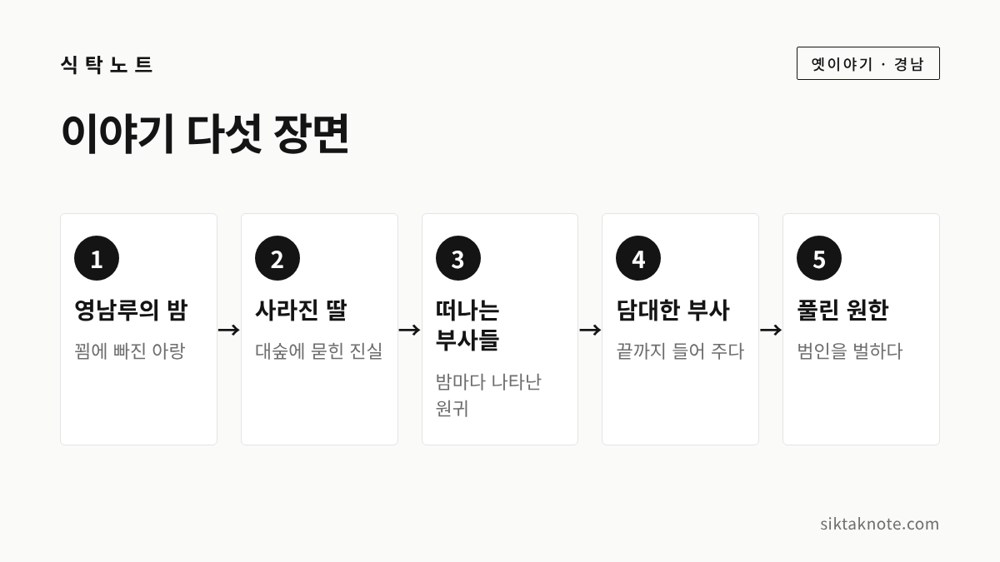

밀양 아랑 전설 — 영남루와 아랑각, 그리고 밀양아리랑 이야기

3줄 요약
- 밀양부사의 딸 아랑이 억울하게 죽은 뒤 원귀가 되어, 담대한 새 부사의 도움으로 원한을 풀었다는 전설입니다.
- 영남루 바로 아래 대숲에 아랑을 기리는 아랑각이 있고, 지금도 제향이 이어지고 있어요.
- 밀양아리랑이 아랑에서 나왔다는 이야기는 널리 알려져 있지만, 학계에서는 민간어원설로 봅니다.
행사 정보
- 영남루 주소
- 경상남도 밀양시 중앙로 324 (내일동)
- 관람
- 09:00~18:00, 연중무휴, 무료 (한국관광공사 자료)
- 주차
- 주차장 있음, 30분 500원·하루 최대 5,000원 (한국관광공사 자료)
- 아랑각
- 영남루 바로 아래 남천강 쪽 대나무숲 안
- 문의
- 055-359-5590 (영남루)
2026.10.06 확인 기준. 관람 시간과 주차 요금은 바뀔 수 있어요. 가시기 전에 영남루 문의 전화로 확인하세요.

영남루에서 시작된 이야기
경남 밀양에는 강가 절벽 위에 우뚝 선 누각, 영남루가 있습니다. 이 누각 아래 대숲에는 오래된 이야기가 하나 전해지는데요. 바로 아랑 전설입니다. 한국민족문화대백과사전은 이 이야기를 '억울하게 죽은 아랑이 원귀가 되어 자신의 원한을 푼 뒤 변고가 없어졌다는 설화'라고 설명합니다.
꾐에 빠진 아랑
옛날 밀양에 새 부사가 부임하면서 딸 아랑도 함께 내려왔다고 해요. 한국관광공사 대한민국 구석구석은 아랑을 조선 명종 때 밀양부사의 딸 윤동옥이라고 소개하고, 재주 있고 아름다운 규수였다고 전합니다.
그런데 고을의 구실아치인 통인 하나가 아랑에게 흑심을 품었습니다. 통인은 아랑의 유모를 한편으로 끌어들여 아랑을 영남루로 꾀어냈다고 해요. 그리고 그곳에서 아랑을 욕보이려 했는데요. 아랑이 끝까지 거부하자 통인은 아랑을 해치고, 시신을 강가 대숲에 감추었다고 전해집니다.
딸이 하루아침에 사라졌으니 부사의 마음이 어땠을까요. 이야기에 따라 그 뒤 부사가 어떻게 되었는지는 조금씩 다르게 전해집니다.
밤마다 나타난 여인
그 뒤로 밀양에는 이상한 일이 이어졌습니다. 새 부사가 부임할 때마다 밤중에 한 여인이 나타났는데요. 머리를 풀어 헤친 채 가슴에서 피를 흘리고, 목에는 칼이 꽂혀 있었다고 해요. 여인은 억울함을 풀어 달라고 호소했지만, 놀란 부사들은 그대로 목숨을 잃었다고 전해집니다. 부사들이 잇달아 죽어 나가니, 밀양 고을이 얼마나 흉흉했을지 짐작이 가죠.
담대한 새 부사
그러다 담이 큰 새 부사가 밀양에 오게 됩니다. 그날 밤에도 여인이 나타났지만, 새 부사는 물러서지 않고 끝까지 이야기를 들어 주었어요. 여인은 자신이 죽은 사연과 범인인 통인의 이름을 알려 주었다고 합니다.
부사는 그 통인을 잡아들여 죄를 밝히고 처형했습니다. 그 뒤로 밀양에는 더 이상 변고가 없었다고 합니다.
기록에 남은 아랑
이 이야기는 입으로만 전해진 게 아닌데요. 한국민족문화대백과사전에 따르면 홍직필이 1810년에 쓴 「기영남루사」를 비롯해 『청구야담』, 『동야휘집』, 『금계필담』 같은 책에 실렸습니다. '아랑 설화'라는 이름은 손진태가 붙였고, 그 유래는 정인섭의 『온돌야화』에서 비롯되었다고 해요.
흥미로운 건 비슷한 줄거리가 다른 나라에도 있다는 점입니다. 손진태는 이런 이야기를 '아랑형 전설'이라고 부르며 중국 송나라 홍매의 『이견지』에 실린 이야기와 견주어 살폈다고 해요. 그래도 백과사전은 우리나라 아랑 설화가 밀양을 본고장으로 배경이 고정되어 있고, 실제로 아랑각이 있어서 이야기의 진실성을 더 뒷받침한다고 설명합니다. 후대로 갈수록 원귀가 나타나는 무서운 장면이 강조되었고, 「장화홍련전」 같은 소설로도 이어졌다고 합니다.
영남루 아래 아랑각
아랑각은 영남루 바로 아래, 남천강 옆 대나무숲 속에 있는 사당입니다. 대한민국 구석구석에 따르면 조선 명종 때 세워졌다고 하고, 1965년에 낡은 건물을 지역 주민과 출향 인사들의 성금, 당국의 보조로 다시 지었다고 해요.
매년 음력 4월 16일에는 소복을 입은 처녀들이 제관이 되어 아랑의 넋을 기리는 제사를 올린다고 소개되어 있습니다. 한국민족문화대백과사전도 밀양에 아랑각이 있어 지금까지 아랑을 제향하고 있다고 적고 있어요.
밀양아리랑대축제도 이 제사와 이어져 있습니다. 백과사전에 따르면 축제는 1957년 영남루 중수를 기념해 '밀양종합문화제'로 시작되었고, 1963년 '아랑제', 1968년 '밀양아랑제'를 거쳐 2004년 지금의 이름이 되었습니다. 축제 때는 심사를 거쳐 뽑힌 규수가 제관이 되어 아랑 제사를 모신다고 해요.
밀양아리랑은 아랑에서 나왔을까
"날 좀 보소, 날 좀 보소" 하는 밀양아리랑을 들으면 아랑이 먼저 떠오르는 분도 많으실 텐데요. 밀양 사람들이 아랑을 기리며 부르던 노래가 밀양아리랑이 되었다는 이야기는 지역에서 널리 전해집니다.
하지만 이건 통설로 보기 어렵습니다. 한국민족문화대백과사전 '아리랑' 항목은 아리랑이라는 말이 아랑에서 왔다는 설을 신라의 알영비에서 왔다는 설 등과 함께 소개하면서도, 이런 설들이 민간어원설의 범주를 크게 벗어나지 못한다고 봅니다. 다만 노래에 담긴 정서를 설명하는 데는 상당한 타당성이 있다고 덧붙여요. 언론 보도에서는 밀양아리랑 가락이 다른 아리랑보다 빠르고 흥겨워서, 들에서 일하며 부르던 농요에서 나왔다는 의견도 소개합니다.
아랑과 밀양아리랑은 사람들 마음속에서 오래 함께 엮여 온 이야기인데요. 노래가 아랑에서 나왔다는 건 전해 오는 이야기이고, 학계에서는 민간어원설로 본다는 정도로 알아 두시면 좋겠습니다.
지금 영남루에 가 본다면
영남루는 경상남도 밀양시 중앙로 324(내일동)에 있습니다. 백과사전에 따르면 지금 건물은 1365년에 처음 세워진 뒤 여러 번 고쳐 지었고, 1844년 불이 난 뒤 다시 지은 것이라고 해요. 1963년 보물로 지정되었다가 2023년 12월 28일 국보가 되었습니다. 진주 촉석루, 평양 부벽루와 함께 우리나라 3대 누각으로 꼽힌다고 알려져 있어요.
한국관광공사 자료로는 오전 9시부터 오후 6시까지 연중무휴로 문을 열고, 입장료는 없습니다. 영남루 마루에 올라 강을 내려다본 뒤 아래 대숲 길로 내려가면 아랑각을 만날 수 있어요. 해 질 무렵 강바람을 맞으며 걸으면 이야기가 더 가깝게 느껴질 것 같습니다.
같은 경남의 옛 이야기와 맛이 궁금하다면 진주냉면과 진주비빔밥 이야기를, 은혜와 원한이 얽힌 또 다른 전설은 치악산 꿩의 보은 전설을 함께 읽어 보세요.
이 글은 여러 자료에서 확인되는 줄거리를 바탕으로 새로 풀어 쓴 것입니다. 2026년 10월 6일 기준입니다.